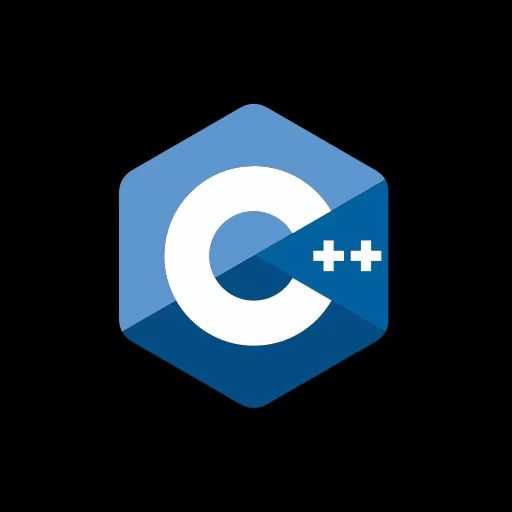

Hi,
I'm Jingwei Xiong.
Applied Mathematics | Senior
Applied Mathematics Student with a keen interest in artificial intelligence and web technologies.
Education Experience
- University of California, San Diego, La Jolla, CA

- B.S. in Applied Mathematics; GPA: 3.7/4.0 (Expected Jun 2025)
- Core Courses: Introduction to Analysis I, Stochastic Processes II, Enumerative Combinatorics, Numerical Analysis/Linear Algebra, Actuarial Mathematics I, Discrete Math & Graph Theory, Applied Linear Algebra
- Mount San Antonio College, Walnut, CA
- GPA: 3.93/4.0; Mathematics Achievement Scholarship (Aug 2021 - Jun 2023)
Job Experience
- Research Intern at CSC Financial, Nanchang, China (July 2023 - Sep 2023)

- Facilitated the collection, cleaning, organization, and analysis of industry data.
- Created data visualizations using Excel to present findings.
- Coordinated key communications, such as quarterly conference calls and official announcements.
- Authored comprehensive research reports, integrating primary and secondary data sources.
- Low-Code Platform Tester Intern at Jinher Network Beijing, Beijing, China (Jun 2022 - Aug 2022)

- Conducted comprehensive testing on an innovative low-code AI platform.
- Collaborated closely with the development team to provide feedback and suggestions.
- Assisted in optimizing app templates for various domains.
- Event Coordinator Intern at Kehang Cultural Company, Nanchang, China (Jun 2021 - Aug 2021)

- Organized and participated in biannual bookstore publishing and sales events.
- Arranged and conducted daily presentations at public high schools.
- Coordinated logistics and managed event schedules.
Leadership Experience
- Volunteer Group Leader at Red Cross Society, Nanchang, China (Jul 2020 - Aug 2020)
- Organized community members for orderly COVID-19 testing, ensuring compliance with health protocols.
- Compiled testing lists, managed logistics, and assisted community members in understanding testing procedures.
Skills & Languages
-  Programming: Proficient in Excel and C++ for data processing, statistical analysis, and data visualization
- Languages: Proficient in Chinese and English
Contact
Email: j3xiong@ucsd.edu
Download Resume